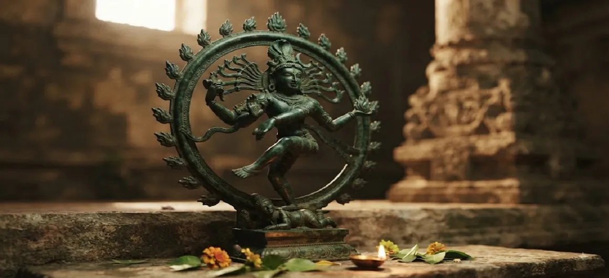

शिव भक्ति की शक्ति
कोटिरुद्र संहिता का अट्ठाईसवां अध्याय भगवान शिव के प्रति निर्देशित शुद्ध भक्ति की सर्वोच्च, परिवर्तनकारी शक्ति की पड़ताल करता है।
तीर्थयात्रा के आशीर्वाद के बाद, यह अध्याय बताता है कि सच्ची भक्ति वह अंतर्निहित उत्प्रेरक है जो सभी कर्म बंधनों पर विजय प्राप्त करती है और आत्मा को परमात्मा से जोड़ती है।
यह इस बात का गहरा प्रमाण है कि कैसे प्रेम, समर्पण और विश्वास सर्वोच्च भगवान के हृदय को प्रेरित कर सकते हैं।
अध्याय 28 की मुख्य बातें
सर्वोच्च बल
ब्रह्मांड में भक्ति सबसे बड़ी शक्ति है।
अहंकार का समर्पण
व्यक्तिगत गौरव को दैवीय जागरूकता में विघटित करना।
कर्म पर विजय पाना
भक्ति सभी संचित भाग्य जंजीरों को जला रही है।
अमोघ सुरक्षा
अपने समर्पित बच्चों के लिए शिव की सतर्क देखभाल।
आंतरिक परिवर्तन
नश्वर दुःख से शाश्वत आनंद की ओर स्थानांतरण।
दिव्य मिलन
ब्रह्मांडीय चेतना के साथ एकता प्राप्त करना।
इस अध्याय में मुख्य विषय
- 01शुद्ध भक्ति की सर्वोच्च प्रकृति→
- 02भक्ति के माध्यम से सभी बाधाओं पर विजय प्राप्त करें→
- 03समर्पण और ईश्वरीय कृपा का तालमेल→
- 04आशुतोष के रूप में शिव: भक्ति से शीघ्र प्रसन्न होते हैं→
- 05ईश्वरीय प्रेम में अहंकार को विघटित करना→
- 06सच्चे भक्त की निर्भयता→
- 07आंतरिक तेज और शांति को जागृत करना→
- 08अटूट भक्ति का शाश्वत फल→
- 09रोजमर्रा की जिंदगी में परिवर्तनकारी शक्ति→
- 10अध्याय 29 की ओर →
शुद्ध भक्ति की सर्वोच्च प्रकृति
पाठ बताता है कि सच्ची भक्ति जटिल अनुष्ठानों या विद्वानों के ज्ञान से बंधी नहीं है, बल्कि भगवान शिव के प्रति प्रेम और श्रद्धा से भरे हृदय से स्वाभाविक रूप से बहती है।
यह आध्यात्मिक सत्य के उच्चतम क्षेत्रों तक पहुँचने में सक्षम सबसे शक्तिशाली शक्ति है।
भक्ति के माध्यम से सभी बाधाओं पर विजय प्राप्त करें
कर्म संबंधी बाधाएँ या सांसारिक चुनौतियाँ कितनी भी गंभीर क्यों न हों, शुद्ध भक्ति में लगा हुआ भक्त दैवीय समर्थन से उन पर सहजता से विजय प्राप्त कर लेता है।
शिव की शक्ति भक्त की ढाल और ताकत बन जाती है।
समर्पण और ईश्वरीय कृपा का तालमेल
जब कोई साधक अपने अहंकार और इच्छाशक्ति को पूरी तरह से भगवान शिव के चरणों में समर्पित कर देता है, तो कृपा तुरंत उतरती है, और आंतरिक पात्र को असीम शांति से भर देती है।
समर्पण वह कुंजी है जो परम अनुग्रह का द्वार खोलती है।
आशुतोष के रूप में शिव: भक्ति से शीघ्र प्रसन्न होते हैं
अध्याय में दोहराया गया है कि भगवान शिव को आशुतोष के रूप में जाना जाता है क्योंकि उन्हें महंगे प्रसाद से नहीं, बल्कि भक्ति और शुद्ध प्रेम के सच्चे आंसुओं से आसानी से जीता जा सकता है।
एक पत्ता, पानी की एक बूंद और एक शुद्ध हृदय उनकी उपस्थिति का आह्वान करने के लिए पर्याप्त है।
ईश्वरीय प्रेम में अहंकार को विघटित करना
भक्ति एक पवित्र अग्नि के रूप में कार्य करती है जो स्वार्थ, अहंकार और क्षुद्र इच्छाओं को जला देती है, और शुद्ध चेतना को प्रतिबिंबित करने वाला एक पारदर्शी मन छोड़ देती है।
व्यक्तिगत अहंकार शांतिपूर्वक शिव के सार्वभौमिक महासागर में विलीन हो जाता है।
सच्चे भक्त की निर्भयता
देवों के देव की शरण में, सच्चा भक्त मृत्यु, समय और सांसारिक अनिश्चितता के सभी भय खो देता है, और दृढ़ साहस के साथ जीवन में आगे बढ़ता है।
शिव की सुरक्षा पूर्ण और शाश्वत है।
आंतरिक तेज और शांति को जागृत करना
निरंतर भक्ति का अभ्यास एक आंतरिक चमक को जागृत करता है जो आत्मा को रोशन करता है, अज्ञानता और भ्रम के अंधेरे को दूर करता है।
साधक को अटल आन्तरिक आनन्द का अनुभव होता है।
अटूट भक्ति का शाश्वत फल
जिनकी भक्ति सुख और दुख के बावजूद स्थिर रहती है, वे अंततः नश्वर पीड़ा से मुक्त होकर शिवलोक में स्थायी निवास प्राप्त करते हैं।
वे मुक्ति की उच्चतम अवस्था (मोक्ष) प्राप्त करते हैं।
रोजमर्रा की जिंदगी में परिवर्तनकारी शक्ति
भक्ति की शक्ति केवल मंदिरों तक ही सीमित नहीं है; यह रोजमर्रा के कार्यों को पवित्र प्रसाद में बदल देता है, दैनिक जीवन को अनुग्रह और उद्देश्य से भर देता है।
हर सांस महादेव के लिए एक मौन प्रार्थना बन जाती है।
अध्याय 29 की ओर
भक्ति की सर्वोच्च शक्ति को स्थापित करने के बाद, कथा रुद्राभिषेक पूजा की गहन महिमा और विधि का पता लगाने के लिए तैयार होती है।
पाठकों को अध्याय 29, रुद्राभिषेक की महिमा को जारी रखने के लिए आमंत्रित किया जाता है।
अध्याय 28 की मुख्य शिक्षाएँ
परम बल
भक्ति ईश्वर तक पहुंचने का सबसे मजबूत पुल है।
आशुतोष अनुग्रह
शिव को शुद्ध प्रेम और आंसुओं से आसानी से जीत लिया जाता है।
अहंकार विलीन हो गया
अहंकार का त्याग करने से आंतरिक चेतना शुद्ध होती है।
पूर्ण ढाल
भक्त स्थायी रूप से अस्तित्वगत भय से सुरक्षित रहते हैं।
स्थिर आनंद
आंतरिक आनंद सांसारिक उतार-चढ़ाव से अप्रभावित रहता है।
मुक्ति प्राप्त हुई
शुद्ध भक्ति की परिणति शिव के साथ शाश्वत मिलन में होती है।
आध्यात्मिक चिंतन
भगवान शिव की भक्ति की शक्ति सभी बौद्धिक सीमाओं, भव्य अनुष्ठानों और भौतिक संपदा से परे है। यह अपनी उत्पत्ति के प्रति आत्मा की सच्ची चाहत है - एक शुद्ध समर्पण जो आशुतोष के हृदय को छू जाता है। जब भक्ति हमारे जीवन को सहारा देती है, तो हर चुनौती एक सीढ़ी बन जाती है, हर दुःख समर्पण के अवसर में बदल जाता है, और हर पल दिव्य उपस्थिति से गूंज उठता है। यह अध्याय हमें याद दिलाता है कि सच्ची ताकत सांसारिक प्रभुत्व में नहीं, बल्कि महादेव के सर्वोच्च प्रकाश के प्रति पूरी तरह से समर्पित और समर्पित हृदय में निहित है।
अध्याय 28 का संदेश जीना
अपने दैनिक जीवन में प्रत्येक कार्य, विचार और श्वास को पूरी ईमानदारी से भगवान शिव को समर्पित करके शुद्ध भक्ति विकसित करें।
सभी बाधाओं के माध्यम से आपका मार्गदर्शन करने के लिए उनकी असीम कृपा पर भरोसा करते हुए, अपने अहंकार और चिंताओं को उनकी देखभाल में छोड़ दें।
अपनी भक्ति को एक स्थिर लौ बनने दें जो आपके दिल को गर्म कर दे और आपके आस-पास के लोगों को शांति प्रदान करे।
प्रमुख आध्यात्मिक अवधारणाएँ
भगवान शिव के प्रति निस्वार्थ प्रेम और भक्ति।
सच्चे भक्तों को आसानी से वरदान देने के लिए शिव की तत्परता।
व्यक्तिगत गौरव का दैवी चेतना में विलीन होना।
सांसारिक बंधनों के विरुद्ध भक्ति का सुरक्षा कवच।
शिव की शरण से पैदा हुआ अटूट साहस.
व्यक्तिगत आत्मा का ब्रह्मांडीय भगवान के साथ अंतिम विलय।
अध्याय सारांश
कोटिरुद्र संहिता अध्याय 28 भगवान शिव की भक्ति की सर्वोच्च शक्ति का जश्न मनाता है। इसमें बताया गया है कि कैसे शुद्ध भक्ति, अहंकार का समर्पण और अटूट विश्वास सभी कर्म बाधाओं पर विजय प्राप्त करते हैं, भय को दूर करते हैं और आशुतोष की असीम कृपा का आह्वान करते हैं। भक्ति को परम आध्यात्मिक शक्ति के रूप में उजागर करके, यह अध्याय अध्याय 29 के लिए मंच तैयार करता है, जो रुद्राभिषेक पूजा की गहन महानता की पड़ताल करता है।
अक्सर पूछे जाने वाले प्रश्न
1. कोटिरुद्र संहिता अध्याय 28 का केंद्रीय विषय क्या है?
अध्याय 28 भगवान शिव के प्रति शुद्ध भक्ति की सर्वोच्च, परिवर्तनकारी शक्ति पर केंद्रित है, जो दर्शाता है कि कैसे सच्चा समर्पण सभी भौतिक और कर्म संबंधी बाधाओं पर विजय प्राप्त करता है।
2. भक्ति एक अभ्यासी की आंतरिक स्थिति को कैसे बदल देती है?
भक्ति अहंकार को विघटित करती है, मन को शुद्ध करती है, भय के स्थान पर साहस लाती है और व्यक्तिगत चेतना को शिव की सर्वोच्च ब्रह्मांडीय चेतना के साथ जोड़ती है।
3. यह अध्याय पिछले अध्यायों पर कैसे आधारित है?
जबकि पिछले अध्यायों में तीर्थयात्रा और ज्योतिर्लिंगों की पूजा पर चर्चा की गई थी, अध्याय 28 अंतर्निहित शक्ति - शुद्ध भक्ति - की व्याख्या करता है जो ऐसे सभी कार्यों को फलदायी बनाती है।
4. सच्ची भक्ति पर भगवान शिव की क्या प्रतिक्रिया है?
भगवान शिव, आशुतोष होने के कारण, सच्चे और समर्पित हृदय से उनके पास आने वाले किसी भी व्यक्ति को तुरंत अपनी कृपा, सुरक्षा और परम मुक्ति प्रदान करते हैं।
5. इस अध्याय में कौन सी कथा वर्णित है?
कथा अध्याय 29, 'रुद्राभिषेक की महानता' में परिवर्तित होती है।
6. क्या आंतरिक भक्ति से ऊपर बाह्य अनुष्ठान आवश्यक है?
पाठ इस बात पर जोर देता है कि अनुष्ठानों का अपना स्थान है, आंतरिक प्रेम, ईमानदारी और समर्पण ही सच्चा सार है जो सबसे ऊपर भगवान शिव को प्रसन्न करता है।
"शुद्ध भक्ति वह कुंजी है जो अनंत काल के द्वार खोलती है, भगवान शिव की कृपा के गर्म आलिंगन में सभी कर्मों को विलीन कर देती है।"
कोटिरुद्र संहिता के माध्यम से जारी रखें
अध्याय 28 शिव की भक्ति की शक्ति की पड़ताल करता है। अध्याय 29, रुद्राभिषेक की महिमा को जारी रखें।